![]()
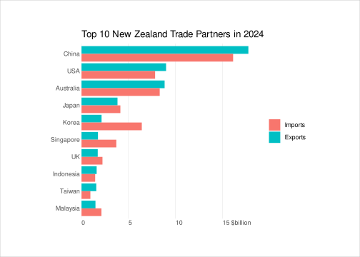
Demystifying the Legend
Under Review
This paper is under review on the experimental track of the Journal of Visualization and Interaction. See the reviewing process.
1 Introduction
Figure 1 shows the amount of goods, in billions of dollars, that were traded between New Zealand and its largest trade partners in 2024. This plot can be broken down into several standard components: data symbols (the bars), a title, an x-axis, a y-axis, and a legend.
The axes, the legend, and even the title, are collectively known as guides (Wilkinson 2005) because they share a common purpose: they explain how data values are encoded within the plot. The guides are there to help us to decode the data symbols. For example, in Figure 1, the trade account, imports versus exports, is encoded as the colour of the bar data symbols. However, bars that differ in colour only indicate that there are different groups—salmon is different from turquoise. The legend is necessary to explain which group corresponds to each colour—salmon means imports and turquoise means exports.
We have an understanding of how data symbols work. For example, we know that encoding trade amounts as the lengths of bars will result in an accurate decoding of their relative lengths, particularly when they share a common baseline (Cleveland and McGill 1984; Mackinlay 1986; Heer and Bostock 2010). We know why bars are effective data symbols and this helps us to make deliberate choices about which data symbols to use when encoding information.
However, we lack corresponding explanations for how guides work. The purpose of guides is often stated in data visualisation guidelines—“helping the user understand and interpret the data in your chart” (Office for National Statistics n.d.) and “allow readers to decode the graphic” (Heer et al. n.d.)—but the mechanism by which guides achieve their purpose is more mysterious (see Figure 2). For example, there is almost no mention of axes and legends in the detailed data visualisation framework described in Munzner (2014).
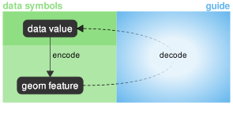
The goal of this article is to consider how guides work in greater depth—to form a better understanding of what makes an effective guide. As a result, we hope to encourage a more intentional and reasoned use of guides in data visualisation. Rather than relying on dogmatic rules of thumb, such as “always label your axes” (Munroe 2010), we would like to arm ourselves with the means to justify our choice of guides. We will also demonstrate that a deeper understanding of guides makes it possible to question the design of even very standard and established guides.
2 Guides are encodings too
We are familiar with the idea that data symbols are the result of encoding data values as the visual features of geometric shapes (Bertin 1983; Munzner 2014). For example, in Figure 1, the bars are the result of encoding country names as the vertical positions of rectangles and encoding trade amounts as the lengths of the rectangles; the bars for China are above the bars for USA and the bars for China are longer because New Zealand has more trade with China.
We are also familiar with the idea that some encodings are more effective than others. For example, encoding quantitative data values, like trade amounts, as the length of bars is effective because we can accurately decode the relative lengths to determine how much larger one trade amount is compared to another (Cleveland and McGill 1984). In Figure 1 we can see that the export trade for China is about twice the export trade for USA. Furthermore, encoding qualitative data values, such as countries, as the positions of bars is effective because we can easily decode differences in position (Munzner 2014). We can easily see that the bars for China are qualitatively different from the bars for USA, based on their different vertical positions.
It is less common to think of guides as the result of encodings, or to think about the effectiveness of guides in terms of their encodings, but that is what we will do in this section. First of all, we will consider the y-axis in Figure 1 and point out some similarities with the data symbols (the bars) in Figure 1.
Although the y-axis consists of text labels and the bars consist of rectangles, they both result from encoding country names as vertical positions. The bars for China are above the bars for USA and the label for China is above the label for USA.
Furthermore, just as we can easily decode qualitative differences from the vertical positions of the bars, we can easily decode qualitative differences from the vertical positions of the labels (Brath 2020). The China bars represent a different group from the USA bars and the China label represents a different group from the USA label.
One difference between the y-axis and the bars in Figure 1 is that the y-axis is also the result of encoding country names as the shape of the text labels. The label for China is in a different vertical position than the label for USA and the label for China uses different letters than the label for USA. The label shapes mean that, in addition to being able to decode that the labels are different, we can decode the absolute data values themselves: China and USA (Murrell 2026).
In summary, the y-axis is very similar to the bars in Figure 1 because the y-axis encodes the same data values as the bars, uses the same encoding as the bars—vertical position—and we can decode the same information from the y-axis as we can from the bars—that there are different qualitative data values. The difference is that the y-axis also encodes the data values as text shape so we can also decode the absolute qualitative data values—the country names—from the text shapes (see Figure 3).
![A node-and-edge diagram with two columns. The left column represents data symbols, with a line indicating that data values are encoded as visual features of geometric shapes and a dashed line indicating that relative values are decoded from the visual features of geometric shapes. The right column represents guides with a line indicating that data values are encoded as the shape of text and absolute values are decoded from text shape. A dotted line indicates that the relative value from the data symbols is associated with the absolute value from the guide thanks to the proximity of the guide text to the data symbol.](Diagrams/text-guide.svg)
In this sense, the y-axis guide is just like the bar data symbols because they both result from encoding data values as visual features and we decode information from those visual features. On their own, the bars and the y-axis work in very similar ways.
The final piece of the puzzle—how the y-axis is used to explain the bars—depends on the fact that the y-axis text labels are placed right next to the corresponding data symbol bars (Wagemans et al. 2012). This proximity means that we can associate the information that we decode from the text labels—the country names—with the associated bars (see Figure 3). For example, the topmost bars are associated with the country China because the text label “China” is placed right next to the topmost bars.
Annotations
Figure 4 shows a variation on Figure 1, with an annotation added. This is another sort of guide that consists of a label to describe a point of interest. In this case, the point is that the United Kingdom, New Zealand’s largest trade partner a century ago, is a much smaller trade partner (in relative terms) in the present day.
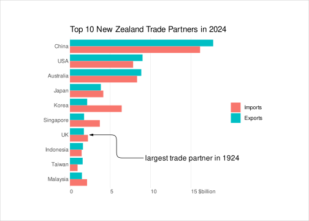
We can explain the effectiveness of the annotation in Figure 4 using the same approach that we used to explain the y-axis.
The annotation label is an encoding of information as the shape of text and we can decode absolute information from that text. This information is associated with the United Kingdom by Gestalt grouping, in this case not by proximity, but by connection; there is a line drawn between the position of the annotation label and the position of the data symbols for the United Kingdom.
3 Guides are data symbols too
We will now consider the legend in Figure 1 in a somewhat unconventional way. For a start, we will consider the legend in isolation, as shown below.
This legend consists of two coloured rectangles with a label alongside each rectangle. The vertical positions of the rectangles and the vertical positions of the labels encode different trade accounts: Imports and Exports. In addition, the trade accounts are encoded as the shapes of the text labels. Furthermore, the trade account is encoded as the colour of the rectangles: salmon for the Imports rectangle and turquoise for the Exports rectangle.
We can decode qualitative differences from the vertical positions and the colours of the rectangles, and we can decode qualitative differences from the vertical positions of the labels, and we can decode absolute trade accounts from the shapes of the text labels. The proximity of the labels to the rectangles allows us to associate a specific trade account with each rectangle and therefore with each colour.
That description of the legend sounds a lot like the description of the bar data symbols and the y-axis in Figure 1 because the legend, in isolation, works the same way. There are text labels that tell us which group each bar (and each colour) corresponds to.
So one point we can make is that the legend is a mini data visualisation all by itself. It consists not only of text labels, but also geometric shapes (rectangles) just like data symbols. A second point is that a guide can consist just of text labels, like the y-axis, or it can consist of text labels plus geometric shapes, like the legend.
Of course, the legend is not intended to be used in isolation. We need to associate the information from the legend with the bar data symbols. The information that we decode from the legend can be associated with the bar data symbols through Gestalt grouping again, in this case via the similarity of the colours (Wagemans et al. 2012); the bar data symbols for Exports are the same colour as the rectangles for Exports in the legend.
In other words, the legend works by associating text labels with geometric shapes in the legend (by proximity) and then associating the geometric shapes in the legend with geometric shapes in the plot (by similarity; see Figure 5).
![A node-and-edge diagram with three columns. The left column represents data symbols, with a line indicating that data values are encoded as visual features of geometric shapes and a dashed line indicating that relative values are decoded from the visual features of geometric shapes. The right two columns represent guides, with the middle column repeating the left column, to indicate that geometric shapes in guides work the same as geometric shapes in data symbols, and, in the right column, a line indicating that data values are encoded as the shape of text and absolute values are decoded from text shape. A dotted line indicates that the relative value from the geometric shape in the guide is associated with the absolute value from the text in the guide thanks to the proximity of the text to the geometric shape *and* another dotted line to indicate that the information from the guide is associated with the relative value from the data symbols thanks to the similarity of the geometric shape in the guide to the geometric shape of the data symbol.](Diagrams/text-geom-guide.svg)
Improving a legend
We have identified that the legend in Figure 1 works thanks to Gestalt similarity. The bar data symbols are automatically associated with the rectangles in the legend that have the same colour. However, that grouping by similar colours is most effective when the shapes being compared are otherwise the same and when there is less complexity overall (Carpenter and Shah 1998; Yu and Franconeri 2015; Yu, Tam, and Franconeri 2019).
This leads to the conclusion that we should make the geometric shapes in the legend as similar as possible to the geometric shapes in the data symbols.
On one hand, this is an unsurprising result. The purpose of a guide is to explain or demonstrate the encoding of data symbols, so the encoding of geometric shapes in the guide should match the encoding of geometric shapes in the data symbols. This is what the legend in Figure 1 does: the encoding of rectangle colour in the legend matches the encoding of rectangle colour in the data symbols.
However, a more strict interpretation says that there should be encodings within a guide that match the encodings used for data symbols and there should be no other encodings. Furthermore, a strict interpretation of “no other encodings” includes implicit or unintentional encodings—visual differences that are noticeable even though they have no explicit connection to differences in the data (Wolfe and Horowitz 2017).
Given this strict interpretation, the legend in Figure 1 is deficient because, although the rectangles in the legend encode colour in the same way as the rectangles for the bar data symbols, the rectangles in the legend differ from the bar rectangles in the several visually-significant ways.
Figure 6 shows a variation of Figure 1 with a legend that attempts to satisfy the strict interpretation. The rectangles in the legend are now the same height as the bar rectangles, the rectangles in the legend start at the same horizontal position as the bar rectangles, there is no vertical separation between the rectangles in the legend (just like the bar rectangles), and the rectangles in the legend are in the same vertical order as the bar rectangles (with exports on top). The comparison between the geometric shapes of the data symbols and geometric shapes in the guide is now a case of like versus like. The encodings in the legend match the encodings in the data symbols and there are no other visual differences between the geometric shapes in the legend and the geometric shapes of the data symbols. The legend in Figure 6 may not provide a very large improvement over the legend in Figure 1, but it does demonstrate how we can deliberately apply a deeper understanding of how guides work.
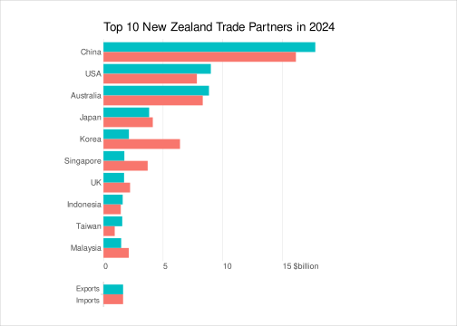
Direct labelling
We have established that a legend works by associating text labels with geometric shapes and then by associating geometric shapes in the legend with the geometric shapes of the data symbols. In other words, a legend works in two steps: the first step just uses the proximity of text labels to geometric shapes; and the second step uses the similarity of geometric shapes (see Figure 5).
Figure 6 was an attempt to improve Figure 1 by optimising the second step—by optimising the similarity of the geometric shapes that are used in the legend and for the data symbols. An alternative approach to improving Figure 1 is just to remove the second step altogether.
Figure 7 moves the text labels from the legend to positions directly beside the top two bars. The trade account is encoded as the vertical position of the text labels (for one country, China) and as the shape of the text labels. These two labels act as a guide for the encoding of trade account that works in a similar way to the y-axis labels. We can decode the exact data values for trade account from the labels and rely on the encoding of vertical position of the labels, plus Gestalt proximity, to group a bar with its corresponding label (see Figure 3). There is no longer any need to compare a geometric shape in the guide with the geometric shapes of the data symbols (Carpenter and Shah 1998). This approach is sometimes called direct labelling (Tufte 2006).
In Figure 7, we have also encoded the trade account as the colour of the text labels. This further reinforces the association between the text labels and the relevant bars for China, plus it visually groups the labels with bars of similar colour across the whole plot.
It is worth noting that, according to this breakdown, a standard y-axis, like the one in Figure 1, is actually just a form of direct labelling.
Improving an x-axis
We now move on to the x-axis in Figure 1. On one hand, the x-axis can be analysed in a similar fashion to the y-axis. The bar data symbols are a result of encoding trade amounts as horizontal bar lengths and the x-axis is a result of encoding trade amounts as the horizontal position of text labels. In addition, trade amounts are encoded as the shape of the text labels on the x-axis.
We can decode quantitative differences from the bar lengths. We can easily see that some bars are longer than others and we can also decode the ratios of bar lengths, for example, the China export bar is roughly twice the length of the USA export bar. We can decode similar quantitative information from the positions of the text labels. In fact, ratios are even easier to decode because of the regular spacing of the text labels. Finally, we can decode absolute trade amounts from the shapes of the text labels.
However, there are several differences between the y-axis and the x-axis in Figure 1. Whereas both axes contain text labels, the x-axis also consists of vertical grid lines. In this sense, the x-axis is similar to the legend because it contains both text labels and geometric shapes.
We can associate the trade amounts from the x-axis labels with the grid lines due to their proximity to each other (just as we associate labels with rectangles in the legend) and we can compare the lengths of the bar data symbols to the grid lines to associate bar length differences and ratios with actual trade amounts. The latter step is similar to the second step in how a legend works because it involves comparing geometric shapes, even if in this case it is comparing lengths for differences rather than comparing colours for similarity as in the legend (see Figure 5).
The main point is that the x-axis works in two steps, like the legend, which means that we can modify the x-axis using the same idea that we used to modify the legend in Figure 6. Specifically, we can make the geometric shapes in the x-axis as similar as possible to the geometric shapes used for the data symbols, except for the encoded differences.
Figure 8 implements that approach for the bar plot in Figure 7. In Figure 8, the x-axis consists of the same labels as before, but the geometric shapes on the x-axis are now rectangles. Now, the encoding of the geometric shapes in the guide (lengths of rectangles) matches the encoding of the geometric shapes used for the data symbols (also lengths of rectangles). Furthermore, in addition to the obvious choice of aligning the left edge of the rectangles in the guide with the left edge of the rectangle data symbols, we have set the heights of the rectangles in the guide to be the same as the heights of the rectangle data symbols. In summary, we are now able to compare the lengths of bar data symbols with the lengths of bars in the x-axis, rather than comparing the lengths of bar data symbols with the positions of grid lines in the x-axis.
We should acknowledge that there is a significant visual difference between the x-axis bars and the data symbol bars in Figure 8 because the x-axis bars are grey whereas the data symbol bars are teal or salmon. This difference is necessary in order to differentiate the bars for the x-axis from the bars for the data symbols. In effect, the use of grey versus teal/salmon encodes the categorical information that some bars are for the x-axis and some bars are data symbols.
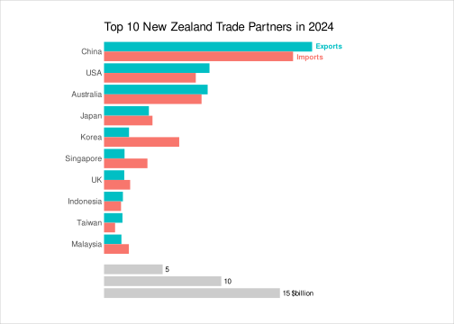
One problem with Figure 8 is that it is more difficult to compare the rectangles in the data symbols with the rectangles in the x-axis thanks to the vertical distance between the rectangles (Lu et al. 2021; Talbot, Setlur, and Anand 2014). Figure 9 applies a further modification, abandoning the traditional position of the x-axis at the bottom of the plot and placing the guide rectangles amongst the ordered rectangles used for the data symbols.
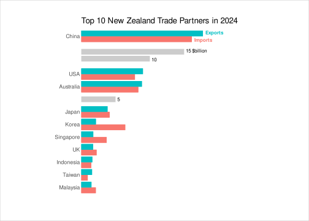
In Figure 9, compared to Figure 1, our analysis of how guides work has essentially lead us to replace the original legend with a second y-axis and to replace the original x-axis with a new (embedded) legend. Again, it is difficult to claim that Figure 9 is in all ways superior to Figure 1, but Figure 9 does demonstrate that a deeper understanding of how guides work can lead us to consider some novel approaches to generating guides.
Another reason why the standard x-axis works in Figure 1 is because viewers are very used to seeing a guide like this in a data visualisation (Tsai, Hahn, and Siegler 2026). Figure 9 is at a disadvantage in this regard because viewers are not used to seeing an embedded x-axis.
Before we leave the x-axis, we must acknowledge the alternative approach that we used to improve the legend in Figure 7: instead of attempting to improve the second step, we can just remove the second step by using direct labelling.
Figure 10 shows a version of our bar plot with all trade amounts encoded as text labels directly beside each bar. Although we are now able to decode trade amounts from the shape of text labels and associate those trade amounts with bars simply by the proximity of the text labels to the bars, the large number of text labels makes it more difficult to compare the bars themselves. Figure 10 demonstrates that direct labelling is not always a good option, essentially due to the clutter that it creates (Hearst 2023; Ajani et al. 2022). In essence, an important limitation of direct labelling is that it becomes impossible to place multiple labels directly next to the related data symbol (and not too close to unrelated data symbols).
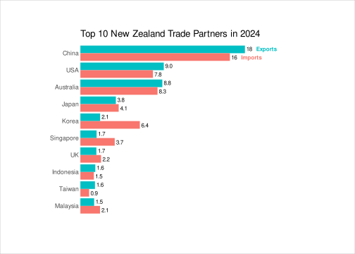
Improving a quantitative colour legend
We now turn to a new example in order to demonstrate another common type of guide. Figure 11 shows a correlation matrix for variables measured on Penguins in the Palmer Archipelago, Antarctica (the Palmer Penguins data set). Correlations are either Pearson’s r (for pairs of quantitative variables) or canonical correlation (if either variable is qualitative, Chinwan and Hurley 2025) and the data symbols in this plot are circles, one for each correlation.
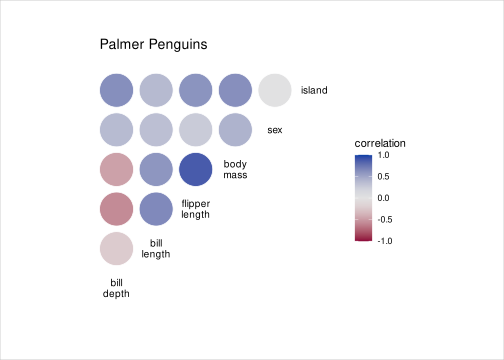
The legend in Figure 11 explains that the correlation between variables is encoded as the colour of each circle data symbol. More specifically, the sign of the correlation is encoded as hue and the magnitude of the correlation is encoded as luminance/chroma. We can see that positive correlations are a shade of blue, with higher correlations a darker and more saturated blue, and negative correlations are a shade of red.
This sort of legend is a common way to explain an encoding of quantitative values using colour, in this case correlation. By contrast, the legend in Figure 1 is the usual way to explain an encoding of qualitative values using colour.
As with the legend in Figure 1, we can think of the legend in Figure 11 as encoding the same information that is encoded in the data symbols, in this case strength and direction of correlation. Furthermore, the effectiveness of the legend comes down to comparisons between the geometric shapes in the legend and the geometric shapes in the data symbols (see Figure 5).
However, in the legend in Figure 11, there is a much more obvious difference between the geometric shapes in the legend and the geometric shapes in the data symbols. The geometric shapes in the legend make up a vertical colour gradient—we can think of the colour gradient as a stack of very thin horizontal lines, each with a slightly different colour. These are very different to the geometric shapes used for the data symbols, which are circle shapes that are filled with different colours.
An additional issue in the case of Figure 11 is the fact that colour perception is sensitive both to neighbouring colours and the size of the coloured region. The data symbol circles are relatively large regions of colour, but the horizontal lines in the legend are much smaller (very narrow) regions of colour, plus they all have another, very similar colour directly adjacent to them. This makes precise matching of colours more difficult (Stone 2012; Ware 2020).
Figure 12 demonstrates an alternative to Figure 11, with a legend that makes use of geometric shapes that match the data symbols. In Figure 12, the crucial step of comparing the visual features (colour) of geometric shapes in the legend to the visual features of geometric shapes in the data symbols is more effective, compared to Figure 11, because the geometric shapes in the legend and in the data symbols are the same size and shape and, in both cases, the circles are surrounded by a white background. At least some tasks, for example identifying which correlations are larger than 0.5, are easier to perform with the new legend.
It is worth noting that the new legend in Figure 12 is also now more similar to the x-axis in Figure 1 because there is just a selection of data values encoded as geometric shapes in the legend (rather than an attempt to encode all possible data values as geometric shapes in the legend of Figure 11). Whereas qualitative guides can encode every possible data value, quantitative guides select a “nice” regular subset of values that support simple comparisons and simple calculations of differences and ratios (Heckbert 1990; Talbot, Lin, and Hanrahan 2010).
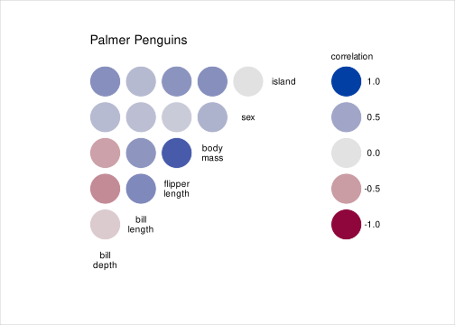
4 Some guides are just text
Back in Section 1, alongside the axes and the legend, and in contrast to the data symbols, we included the plot title as one of the guides in Figure 1. How does the plot title allow us to decode information from the bar plot in Figure 1?
Consider the following question that we might ask of Figure 1: “Which country has the largest trade amount?” This requires decoding which is the longest bar, using the data symbols, and it requires decoding which country is associated with that bar, using the y-axis, and it requires decoding that the data visualisation is about trade, which makes use of the plot title. In other words, the title also encodes information, though the information is metadate rather than data values.
A plot title differs from axes and legends because it consists of a text label, but there is no association with specific data symbols. Instead, the association is with the whole data visualisation. The title provides overall context (see Figure 13).
A title also differs from axes and legends in the size and complexity of its text label. We have seen that text on axes and legends is crucial because it allows us to decode absolute data values, but text also allows us to encode (and therefore decode) more complex and abstract information as well. While the text labels on axes and legends tend to be purely informative, text labels on titles and annotations can also be expressive, persuasive, or even entertaining (Weber 2026).
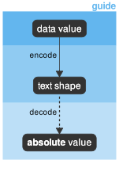
5 Discussion
Reasoning from established knowledge, we have taken the view that guides are encodings of information, just like data symbols are encodings of information. Furthermore, guides are visual elements that we decode information from, just like we decode information from data symbols.
The main difference between guides and data symbols is that guides encode information as text labels whereas data symbols encode information as geometric shapes (though some guides also encode information as geometric shapes). This means that we can decode absolute values from guides, whereas we can only decode relative values from data symbols.
Information that we decode from guides is associated with information that we decode from data symbols via Gestalt processes like proximity, similarity, and connection.
In summary, a guide is an encoding of information as a text label and most guides employ Gestalt principles to associate the text label with corresponding data symbols.
This approach allows us to think more clearly about how a guide contributes to the effectiveness of a data visualisation. Armed with this knowledge, we are able to be more deliberate in our choice of guides and we are able to more effectively critique a guide that is chosen for us. We have also seen several demonstrations that a deeper understanding of guides can lead to the creation of novel and more effective guides.
We have also gained conceptual clarity and simplicity. For example, we have seen that direct labelling and annotations and axes are all variations of the same fundamental guide concept.
These ideas have been demonstrated using a simple bar plot and a correlation matrix, but they are applicable to any guide on any data visualisation.
Deeper but still shallow?
The conceptual approach proposed in this article aims to provide a simple model with practical value. It suggests a way of thinking about guides that is easy to comprehend and that is easy to apply.
However, any simple model will have some limitations. For example, the model contends that only relative values can be decoded from data symbols, but it is possible to use small images or icons as data symbols from which absolute values can be decoded. If we make use of images of a cat and a dog as data symbols to represent two categories then it is possible to decode not just that there are different categories but also that the categories are cats and dogs. So the model proposed in this article is limited to the use of abstract geometric shapes for data symbols.
Furthermore, the focus of this model is limited to just the extraction of simple information from a data visualisation. The model addresses only one small corner of the general problem of graph comprehension (Fox 2023).
Nevertheless, the approach that we have described makes a small contribution to that broader issue. Many theories of graph comprehension emphasise the importance of integrating information that is decoded from data symbols with information that is decoded from guides—“integrative processes that relate these meanings [from graphic patterns] to the referents inferred from labels and titles” (Carpenter and Shah 1998); “once aggregate visual clusters have been … related to the referents” (Ratwani, Trafton, and Boehm-Davis 2008); “coordinated processing of pictorial and semantic features” (Tsai, Hahn, and Siegler 2026)—but the mechanism by which that integration occurs is assumed rather than made explicit. The approach described in this article provides greater clarity on that integrative process.
One theory of graph comprehension that does explicitly address the integration of information from data symbols and guides is Pinker (1990). There are in fact many similarities with the proposal in this article: a data visualisation is divided into a framework (guides) and pictorial material (data symbols); the pictorial material encodes variables as visual attributes (visual features) and the framework consists of both text and geometric shapes; absolute values are decoded from text whereas only ratio values (relative values) are decoded from attributes; and absolute values are associated with ratio values through perceptual grouping (Gestalt grouping; see Figure 14).
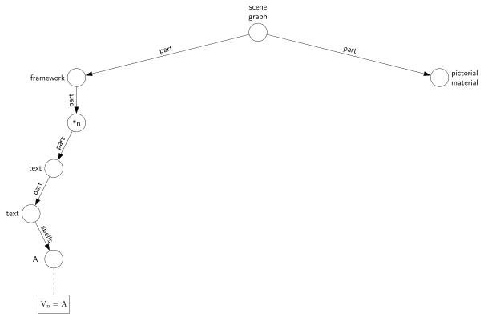
One contribution of the proposal in this article is its relative simplicity. For example, it requires some effort to establish that Figure 14 is addressing the same problem as Figure 5. A second contribution is the stricter interpretation of the mechanism for associating geometric shapes in legends with geometric shapes in data symbols (Section 3). A final contribution is the application of this proposal to critique and suggest modifications to the design of very standard guides.
Automation
It is one thing to conceive of a slightly unusual guide (Figure 6) or an entirely novel guide (Figure 9), but there remains the problem of actually creating guides outside the norm. Most data visualisations are generated by software systems that, conveniently, automate the production of guides. Although some customisation of those default guides may be possible, we are usually limited to a fixed set of predefined guides that have a predefined format.
The examples in this article were generated using lower-level statistical graphics tools and consequently required more time and effort. It is not clear whether that additional effort can always be justified, so developing a sufficiently general automated system that allows greater flexibility in the design of guides is an area for future research.
Acknowledgements
All data visualisations were generated with R (R Core Team 2026), using the following packages:
bullseye, colorspace, dplyr, gggrid, ggplot2, grid, reshape2, and scales.
Thanks to Christina Murrell for valuable feedback and discussions.
References
Ajani, Kiran, Elsie Lee, Cindy Xiong, Cole Knaflic, William Kemper, and Steven Franconeri. 2022. “Declutter and Focus: Empirically Evaluating Design Guidelines for Effective Data Communication.” IEEE Transactions on Visualization and Computer Graphics 28 (October): 3351–64. https://doi.org/10.1109/TVCG.2021.3068337.
Bertin, Jacques. 1983. Semiology of Graphics: Diagrams, Networks, Maps. Madison, Wisconsin: University of Wisconsin Press.
Brath, Richard. 2020. Visualizing with Text. AK Peters Visualization Series. Boca Raton, Florida: CRC Press.
Carpenter, Patricia A., and Priti Shah. 1998. “A Model of the Perceptual and Conceptual Processes in Graph Comprehension.” Journal of Experimental Psychology: Applied 4 (2): 75–100.
Chinwan, Amit, and Catherine B. Hurley. 2025. “A Tidy Data Structure and Visualisations for Multiple Variable Correlations and Other Pairwise Scores.” https://arxiv.org/abs/2411.19830.
Cleveland, William S., and Robert McGill. 1984. “Graphical Perception: Theory, Experimentation, and Application to the Development of Graphical Methods.” Journal of the American Statistical Association 79 (387): 531–54.
Fox, Amy Rae. 2023. “Theories and Models in Graph Comprehension.” In Visualization Psychology, edited by Danielle Albers Szafir, Rita Borgo, Min Chen, Darren J. Edwards, Brian Fisher, and Lace Padilla, 39–64. Cham: Springer International Publishing. https://doi.org/10.1007/978-3-031-34738-2_2.
Hearst, Marti A. 2023. “Show It or Tell It? Text, Visualization, and Their Combination.” Commun. ACM 66 (10): 6875. https://doi.org/10.1145/3593580.
Heckbert, Paul. 1990. “Nice Numbers for Graph Labels.” In Graphics Gems, edited by Andrew Glassner, 61–63. Boston: Academic Press.
Heer, Jeffrey, and Michael Bostock. 2010. “Crowdsourcing Graphical Perception: Using Mechanical Turk to Assess Visualization Design.” In Proceedings of the SIGCHI Conference on Human Factors in Computing Systems, 203–12. ACM.
Heer, Jeffrey, Dominik Moritz, Jake VanderPlas, and Brock Craft. n.d. “Scales, Axes, and Legends.” https://idl.uw.edu/visualization-curriculum/altair-scales-axes-legends/.
Lu, Min, Joel Lanir, Chufeng Wang, Yucong Yao, Wen Zhang, Oliver Deussen, and Hui Huang. 2021. “Modeling Just Noticeable Differences in Charts.” IEEE Transactions on Visualization and Computer Graphics 28 (1). https://doi.org/10.1109/TVCG.2021.3114874.
Mackinlay, Jock. 1986. “Automating the Design of Graphical Presentations of Relational Information.” ACM Trans. Graph. 5 (2): 110–41. https://doi.org/10.1145/22949.22950.
Munroe, Randall. 2010. “Convincing.” https://xkcd.com/833/.
Munzner, Tamara. 2014. Visualization Analysis and Design. AK Peters Visualization Series. Boca Raton, FL: CRC Press. https://doi.org/10.1201/b17511.
Murrell, Paul. 2026. “What Is Text Doing in a Data Visualisation?” Journal of Data Science, Statistics, and Visualisation 6 (3). https://doi.org/10.52933/jdssv.v6i3.172.
Office for National Statistics. n.d. “Data Visualisation – ONS Service Manual.” https://service-manual.ons.gov.uk/data-visualisation.
Pinker, Steven. 1990. “A Theory of Graph Comprehension.” In Artificial Intelligence and the Future of Testing, 73–126.
R Core Team. 2026. R: A Language and Environment for Statistical Computing. Vienna, Austria: R Foundation for Statistical Computing. https://doi.org/10.32614/R.manuals.
Ratwani, Raj M., J. Gregory Trafton, and Deborah A. Boehm-Davis. 2008. “Thinking Graphically: Connecting Vision and Cognition During Graph Comprehension.” Journal of Experimental Psychology. Applied 14 (1): 36–49.
Stone, Maureen. 2012. “In Color Perception, Size Matters.” IEEE Comput. Graph. Appl. 32 (2): 8–13. https://doi.org/10.1109/MCG.2012.37.
Talbot, Justin, Sharon Lin, and Pat Hanrahan. 2010. “An Extension of Wilkinson’s Algorithm for Positioning Tick Labels on Axes.” In IEEE Transactions on Visualization and Computer Graphics, 16:1036–43. 6. IEEE.
Talbot, Justin, Vidya Setlur, and Anushka Anand. 2014. “Four Experiments on the Perception of Bar Charts.” IEEE Transactions on Visualization and Computer Graphics 20 (12). https://doi.org/10.1109/TVCG.2014.2346320.
Tsai, Evelyn Hsin-I, Yoojin Hahn, and Robert S. Siegler. 2026. “The Pictorial–Semantic–Task Framework for Understanding Graph Comprehension.” Journal of Intelligence 14 (2): 28. https://doi.org/10.3390/jintelligence14020028.
Tufte, Edward R. 2006. Beautiful Evidence. Cheshire, CT: Graphics Press.
Wagemans, Johan, James H Elder, Michael Kubovy, Stephen E Palmer, Mary A Peterson, Manish Singh, and Rüdiger von der Heydt. 2012. “A Century of Gestalt Psychology in Visual Perception: I. Perceptual Grouping and Figure–Ground Organization.” Psychological Bulletin 138 (6): 1172–1217. https://doi.org/10.1037/a0029333.
Ware, Colin. 2020. Information Visualization: Perception for Design. 4th ed. San Francisco: Morgan Kaufmann.
Weber, Wibke. 2026. “Why Text Matters in Data Visualization: Exploring the Text-Image Relationship.” In Information Design: Design for Engagement, edited by Yvonne Eriksson, 88–111. Boca Raton, FL, USA: CRC Press.
Wilkinson, Leland. 2005. The Grammar of Graphics. 2nd ed. Statistics and Computing. New York: Springer. https://doi.org/10.1007/0-387-28695-0.
Wolfe, Jeremy M, and Todd S Horowitz. 2017. “Five Factors That Guide Attention in Visual Search.” Nature Human Behaviour 1 (3). https://doi.org/10.1038/s41562-017-0058.
Yu, Dian, and Steven L. Franconeri. 2015. “Similarity Grouping as Feature-Based Selection.” Visual Cognition 23 (7): 843–47. https://doi.org/10.1080/13506285.2015.1093234.
Yu, Dian, Derek Tam, and Steven L. Franconeri. 2019. “Gestalt Similarity Groupings Are Not Constructed in Parallel.” Cognition 182: 8–13. https://doi.org/10.1016/j.cognition.2018.08.006.